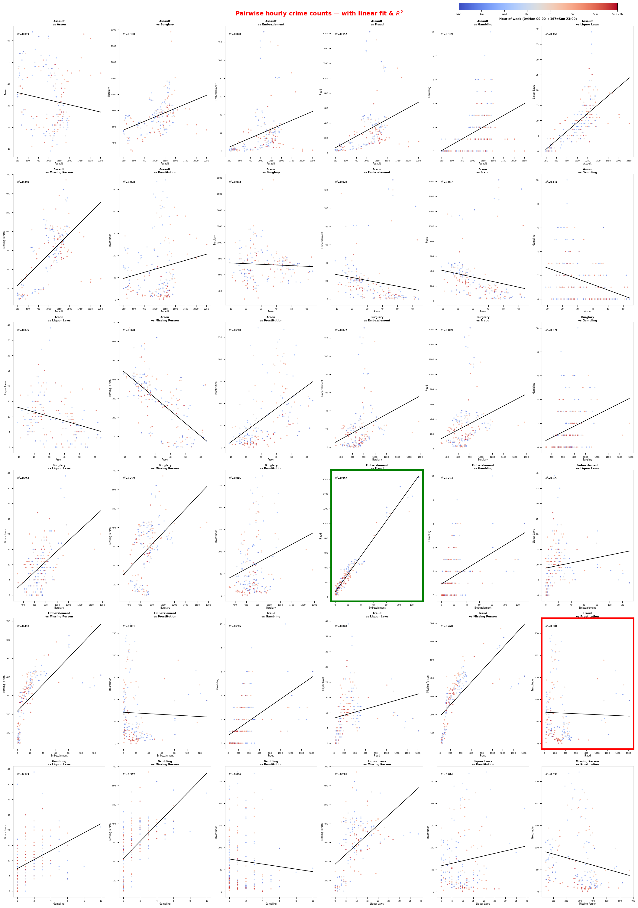

Pairwise Temporal Pattern Similarity
Open ImageEmbezzlement and Fraud show the most similar temporal behavior while Fraud and Prostitution show the most dissimilar day-vs-night reporting pattern.

The Embezzlement vs Fraud pairing represents two report-driven crimes where added investigation into Fraud can naturally uncover more Embezzlement, illustrating a feedback loop in observed counts.